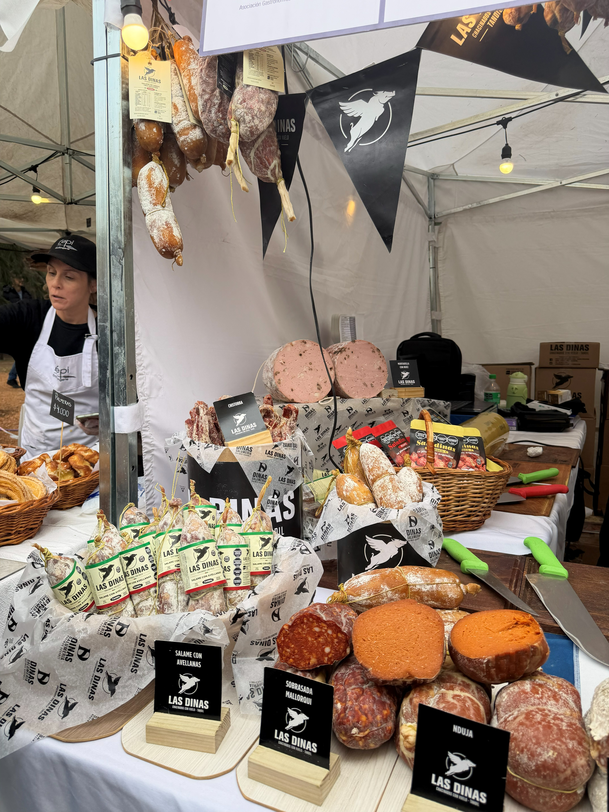
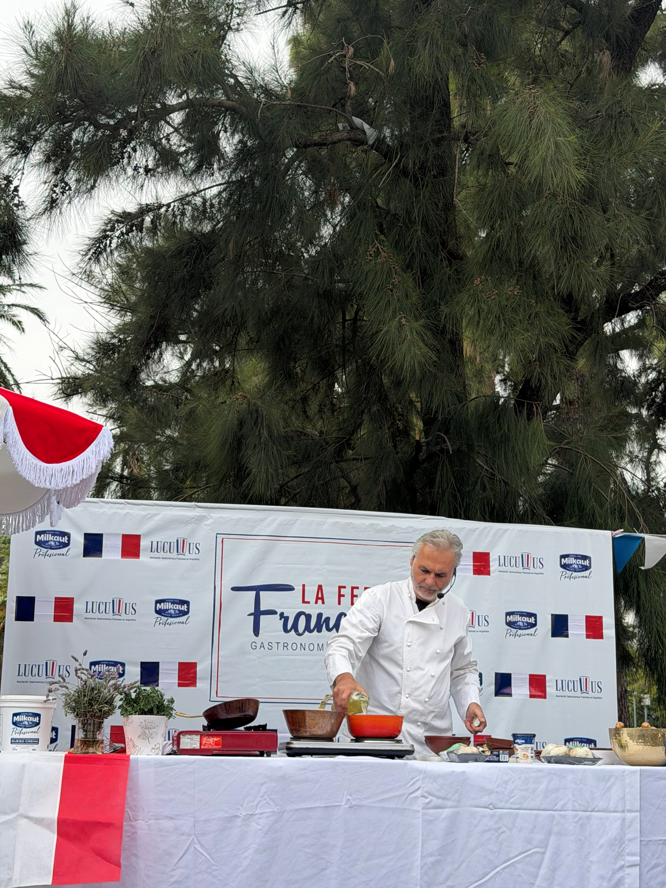

"Se dice que entre el 15% y el 20% de los argentinos tienen origen francés", dijo Romain Nadal, embajador de Francia en Argentina, durante su discurso de apertura en la Feria Francesa el pasado sábado en el Rosedal de Palermo.

La Feria Francesa es organizada hace quince años por Lucullus —la Asociación de Gastronomía Francesa en Argentina— y tiene como objetivo promover la cultura y la gastronomía francesa en el país. El evento reúne cada edición a miles de personas en distintos puntos de la ciudad, con una propuesta que combina tradición, sabor e identidad.
Esta edición contó con 35 stands con platos típicos, dulces y salados, innovación y combinaciones. También, un stand cultural donde se expone la revista La Review, y un stand de merchandising de Lucullus.
"Esta Feria Francesa, durante dos días, es un momento de disfrutar juntos alrededor de una buena comida."
— Romain Nadal, embajador de Francia en ArgentinaDistintos puestos con platos típicos franceses toman lugar, aproximadamente, cinco veces por año, en esta feria que combina el sentimiento patrio y la gastronomía en una jornada para recorrer, disfrutar de la música, los espectáculos y, sobre todo, de la comida.


La voz de los protagonistas
En una nota exclusiva, Sebastián Fouillade, chef y creador del catering Topinambour y socio fundador de Lucullus, nos contó qué sentía al participar en la feria: "Es divertido, hay mucha logística en armar el stand, pero es gratificante darle placer a la gente que viene acá a comer".

"Estamos todos representando a la gastronomía francesa [...] está bueno contar con variedad de platos porque la gente se tienta [...] al ser una feria francesa, la gente viene a buscar ese tipo de platos, aunque en mi restaurante intento tener platos adaptados al paladar argentino."
— Sebastián Fouillade, chef y socio fundador de Lucullus¿Cómo participar?
Modo Feria consultó con uno de los coordinadores, quien informó que la asociación tiene un staff de comisión directiva y socios fundadores permanente. Para el resto de los puestos, son invitados restaurantes, caterings y otros emprendedores gastronómicos para que puedan difundir sus productos.
Para participar en la feria, el primer paso es contactar por redes sociales a Lucullus. El proceso comienza con una entrevista con el Director de la Asociación, quien luego conoce y hace una degustación de la propuesta antes de elegir entre los candidatos.